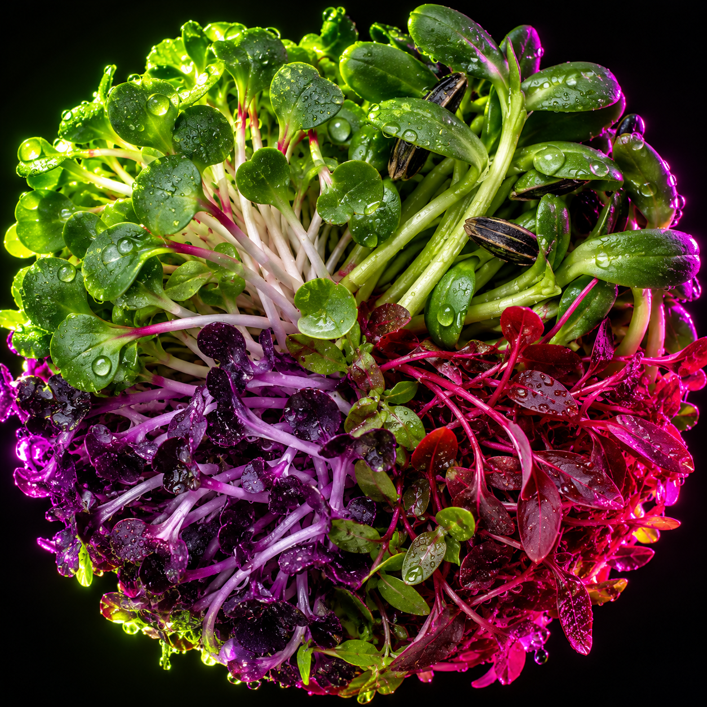
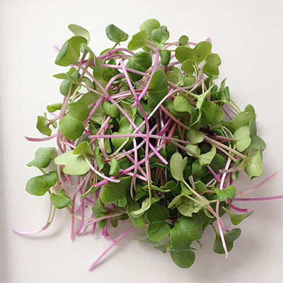

El plato empieza por el color.
Microgreens y flores comestibles cultivados en vertical, sin pesticidas, en La Reina. Cosechados y entregados el mismo día en Santiago.

Elige por color, afina por sabor
Quince variedades de microgreens y flores de temporada. Pídelas sueltas o en mezcla.
Verdes
Frescos, herbales y picantes. La base de cualquier mezcla.


Púrpuras y rojos
Dulces y terrosos. Los que más se notan en el plato.



Flores de temporada
Cultivo limitado. Capuchinas, caléndulas y claveles ya disponibles; pensamientos, mini violas y gypsophila llegan después.


Para cocinas que no pueden esperar al proveedor
Sin intermediarios
Trabajas directo con el productor: calidad, inocuidad y precio sin capas en el medio.
El mismo día
Cosechamos y entregamos en Santiago el mismo día, los 365 días del año.
A tu medida
Formatos y volúmenes para tu cocina, y mezclas pensadas para tu carta. Todo se coordina por WhatsApp.
Cuéntanos qué vas a servir.
Escribir por WhatsAppWhatsApp y teléfono
+56 9 7988 6031
info@minivegetales.cl
Granja
Av. Alcalde F. Castillo Velasco 6989, La Reina
@minivegetales